Plots and Graphs
Recap of ggplot2
The package ggplot2 (downloaded as part of the tidyverse aggregate package) is the primary publication-suitable plotting package in R. While there are many other domain-specific packages, as well as numerous gg-themed add-on packages, most plots rely on a similar scaffolding plotting logic.
Recap of order of operations for building a plot: 1. Use the ggplot() function to specify input data. 2. Within, use aes() to specify variables (columns) to use for x and y and any variable-driven formatting like color. 3. Use a + followed by the appropriate geom_() option to specify type of plot (e.g., scatter plot, bar plot). 4. Various customizations like labels, legends, etc.
Data structure
Note that all variables are numeric and there are quite a few missing values. In order to make any categorical-type plots (bar graphs, separate plots for individual groups, etc.), variables may need to be converted to avoid plotting errors.
str(smartpill)'data.frame': 95 obs. of 22 variables:
$ Group : num 0 0 0 0 0 0 0 0 1 1 ...
$ Gender : num 1 1 1 1 0 1 1 0 1 0 ...
$ Race : num NA NA NA NA NA NA NA NA 1 1 ...
$ Height : num 183 180 180 175 152 ...
$ Weight : num 102.1 102.1 68 69.9 44.9 ...
$ Age : num 25 39 44 53 57 43 38 23 21 24 ...
$ GE.Time : num 74.3 73.3 4.3 NA 13.9 23.3 7.5 5.6 2.73 5.02 ...
$ SB.Time : num 8.4 13.8 6.7 NA 5.1 8.7 3.7 3.4 5.12 3.3 ...
$ C.Time : num NA NA NA NA NA ...
$ WG.Time : num 816 168 240 216 120 ...
$ S.Contractions : num NA NA NA NA NA NA NA NA 145 114 ...
$ S.Sum.of.Amplitudes : num NA NA NA NA NA ...
$ S.Mean.Peak.Amplitude : num NA NA NA NA NA ...
$ S.Mean.pH : num NA NA NA NA NA NA NA NA 2.07 2.28 ...
$ SB.Contractions : num NA NA NA NA NA NA NA NA 298 782 ...
$ SB.Sum.of.Amplitudes : num NA NA NA NA NA ...
$ SB.Mean.Peak.Amplitude : num NA NA NA NA NA ...
$ SB.Mean.pH : num NA NA NA NA NA NA NA NA 7.26 7.21 ...
$ Colon.Contractions : num NA NA NA NA NA NA NA NA 507 50 ...
$ Colon.Sum.of.Amplitudes: num NA NA NA NA NA ...
$ C.Mean.Peak.Amplitude : num NA NA NA NA NA ...
$ C.Mean.pH : num NA NA NA NA NA NA NA NA 7.58 7.21 ...We are going to convert the Group variable to a factor, to make downstream plotting easier when visualizing ‘Group’ as a treatment vs control structure.
smartpill <- smartpill %>%
mutate(Group = as.factor(Group))str(smartpill)'data.frame': 95 obs. of 22 variables:
$ Group : Factor w/ 2 levels "0","1": 1 1 1 1 1 1 1 1 2 2 ...
$ Gender : num 1 1 1 1 0 1 1 0 1 0 ...
$ Race : num NA NA NA NA NA NA NA NA 1 1 ...
$ Height : num 183 180 180 175 152 ...
$ Weight : num 102.1 102.1 68 69.9 44.9 ...
$ Age : num 25 39 44 53 57 43 38 23 21 24 ...
$ GE.Time : num 74.3 73.3 4.3 NA 13.9 23.3 7.5 5.6 2.73 5.02 ...
$ SB.Time : num 8.4 13.8 6.7 NA 5.1 8.7 3.7 3.4 5.12 3.3 ...
$ C.Time : num NA NA NA NA NA ...
$ WG.Time : num 816 168 240 216 120 ...
$ S.Contractions : num NA NA NA NA NA NA NA NA 145 114 ...
$ S.Sum.of.Amplitudes : num NA NA NA NA NA ...
$ S.Mean.Peak.Amplitude : num NA NA NA NA NA ...
$ S.Mean.pH : num NA NA NA NA NA NA NA NA 2.07 2.28 ...
$ SB.Contractions : num NA NA NA NA NA NA NA NA 298 782 ...
$ SB.Sum.of.Amplitudes : num NA NA NA NA NA ...
$ SB.Mean.Peak.Amplitude : num NA NA NA NA NA ...
$ SB.Mean.pH : num NA NA NA NA NA NA NA NA 7.26 7.21 ...
$ Colon.Contractions : num NA NA NA NA NA NA NA NA 507 50 ...
$ Colon.Sum.of.Amplitudes: num NA NA NA NA NA ...
$ C.Mean.Peak.Amplitude : num NA NA NA NA NA ...
$ C.Mean.pH : num NA NA NA NA NA NA NA NA 7.58 7.21 ...Basic plot
A basic scatterplot of the smartpill data looking at small bowel transit time by weight between groups (trauma patients, healthy volunteers):
ggplot(data = smartpill, aes(x = Weight, y = SB.Time, color = Group)) +
geom_point()Warning: Removed 5 rows containing missing values or values outside the scale range
(`geom_point()`).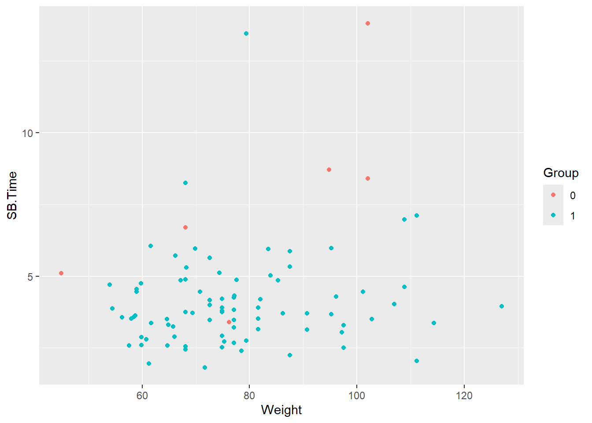
Note the warning about missing values being removed. There are five patients with missing values for SB.Time.
smartpill %>%
select(Group, SB.Time, Weight) %>%
summary() Group SB.Time Weight
0: 8 Min. : 1.810 Min. : 44.91
1:87 1st Qu.: 3.220 1st Qu.: 66.68
Median : 3.775 Median : 74.84
Mean : 4.297 Mean : 77.47
3rd Qu.: 4.850 3rd Qu.: 86.18
Max. :13.800 Max. :127.01
NA's :5 One of these patients is from the critically ill group.
smartpill %>%
filter(is.na(SB.Time)) %>%
select(Group, SB.Time, Weight) Group SB.Time Weight
1 0 NA 69.85317
2 1 NA 77.11064
3 1 NA 72.57472
4 1 NA 51.70949
5 1 NA 77.06528The warning will be suppressed in output moving forward, but not that any data cleanup like remove of missing values should be handled prior to plotting.
Change axis labels
Variable names may need to be updated to make for more readable axis labels. The labs function is used to change axis labels.
ggplot(data = smartpill, aes(x = Weight, y = SB.Time, color = Group)) +
geom_point() +
labs(x = "Weight (kilograms)", y = "Small bowel transit time (hours)")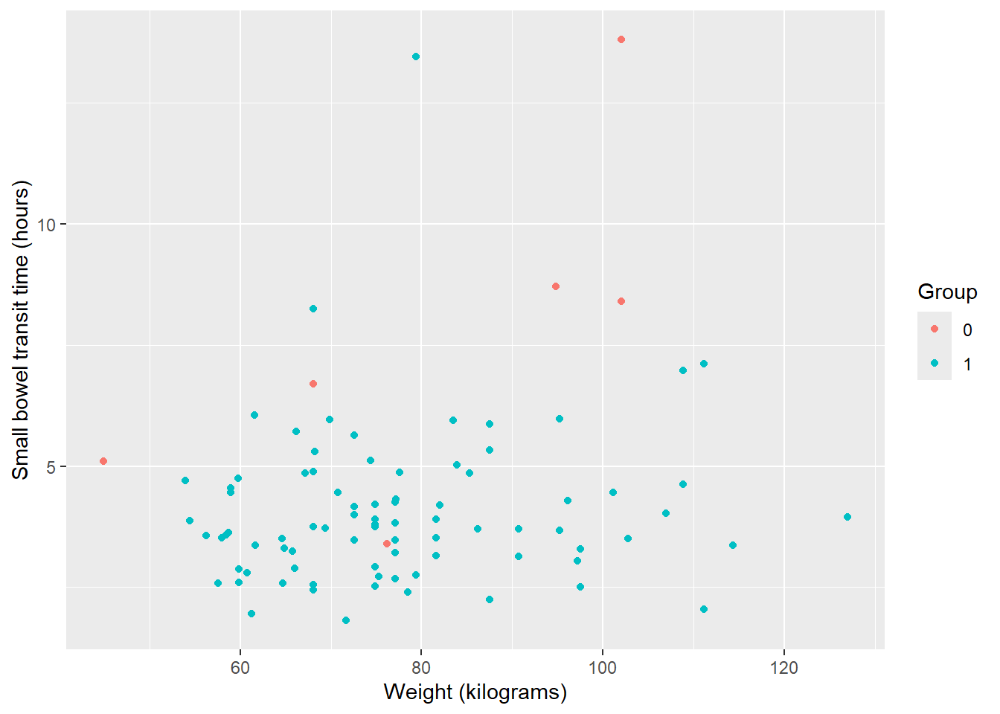
Note: You can also set up a ‘dictionary’ of variables and labels to automatically rename.
ggplot(data = smartpill, aes(x = Weight, y = SB.Time, color = Group)) +
geom_point() +
labs(dictionary = c(SB.Time = "Small bowel transit time (hours)",
Weight = "Weight (kilograms)",
Group = "Treatment"))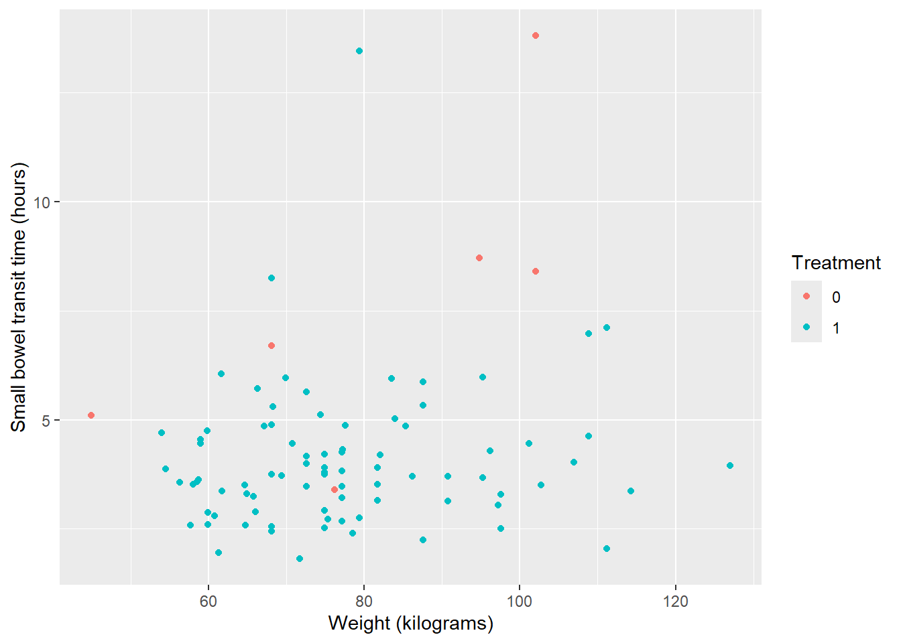
Update legend
By default, the legend title will be the the variable used, which in this case is a factored version of the Group variable. Colors of points will also be default colors and color labels map to discrete variable values.
Because the legend is indicating variable and values related to our specified color variable, we can use the scale_color_manual() function to update everything related to the legend.
Caveat: While scale_color_manual() can update titles and labels as well as colors, order of operations matters. Color must be set in the function, otherwise you may encounter an error.
ggplot(data = smartpill, aes(x = Weight, y = SB.Time, color = Group)) +
geom_point() +
labs(x = "Weight (kilograms)", y = "Small bowel transit time (hours)") +
#set legend title without also setting color
scale_color_manual(name = "Group")Error in `palette()`:
! Insufficient values in manual scale. 2 needed but only 0 provided.First, change colors from default:
ggplot(data = smartpill, aes(x = Weight, y = SB.Time, color = Group)) +
geom_point() +
labs(x = "Weight (kilograms)", y = "Small bowel transit time (hours)") +
#update colors --> 0 = red, 1 = navy
scale_color_manual(values = c("red", "navy"))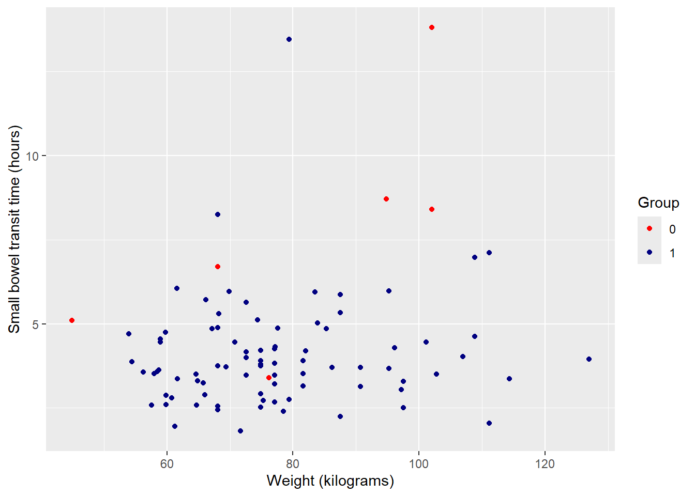
Note: You can view all R built-in color names (650+) by running colors(). NCEAS also has an R color cheatsheet to visually see what color name maps to which color. There are also numerous pre-defined continuous and discrete color palettes available to use.
Next, change 0 / 1 to more complete identifiers. Specify ‘breaks’ as the existing values and ‘labels’ as desired values. In combination with ‘values’ this makes the code much clearer in terms of what values are being changed to what.
ggplot(data = smartpill, aes(x = Weight, y = SB.Time, color = Group)) +
geom_point() +
labs(x = "Weight (kilograms)", y = "Small bowel transit time (hours)") +
scale_color_manual(values = c("red", "navy"),
breaks = c("0", "1"),
labels = c("Critically Ill", "Healthy"))
Finally, update legend title using ‘name’.
ggplot(data = smartpill, aes(x = Weight, y = SB.Time, color = Group)) +
geom_point() +
labs(x = "Weight (kilograms)", y = "Small bowel transit time (hours)") +
scale_color_manual(values = c("red", "navy"),
breaks = c("0", "1"),
labels = c("Critically Ill", "Healthy"),
name = "Group")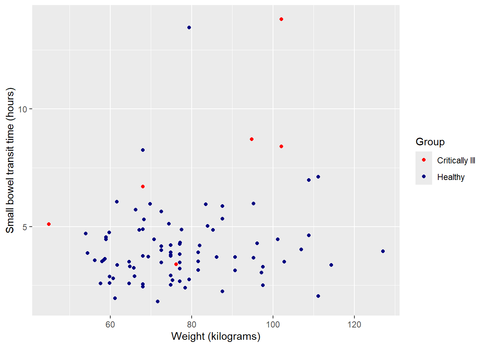
Facet by group
Since the two groups are unbalanced, it may be more useful to view plots separately for each. The function facet_wrap() can create multiples of the same plot (in terms of variables, color, labels, etc.), one for each of a categorical value.
Split plot into multiples by group:
ggplot(data = smartpill, aes(x = Weight, y = SB.Time, color = Group)) +
geom_point() +
labs(x = "Weight (kilograms)", y = "Small bowel transit time (hours)") +
scale_color_manual(values = c("red", "navy"),
breaks = c("0", "1"),
labels = c("Critically Ill", "Healthy"),
name = "Group") +
#facet will only work for categorical (factor) variables
facet_wrap(~Group)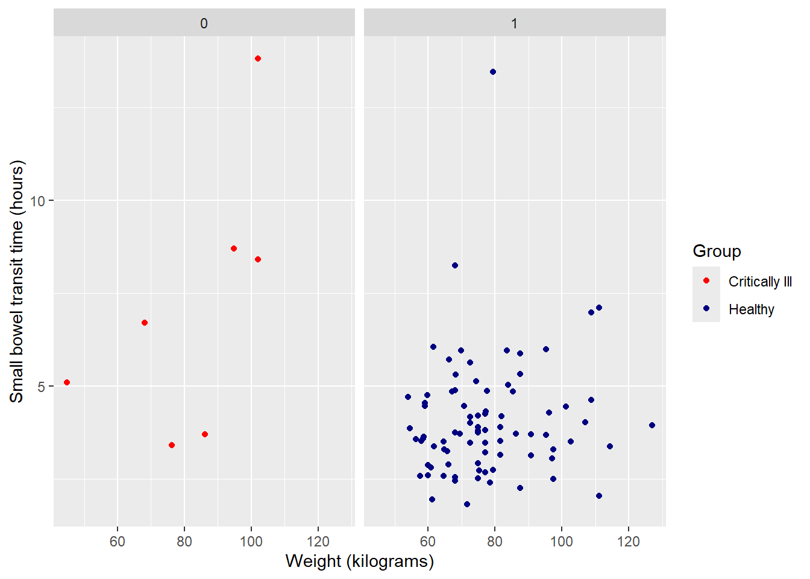
Update panel titles with labeller from 0 / 1 to more complete variable description:
ggplot(data = smartpill, aes(x = Weight, y = SB.Time, color = Group)) +
geom_point() +
labs(x = "Weight (kilograms)", y = "Small bowel transit time (hours)") +
scale_color_manual(values = c("red", "navy"),
breaks = c("0", "1"),
labels = c("Critically Ill", "Healthy"),
name = "Group") +
facet_wrap(~Group,
labeller = as_labeller(c("0" = "Critically Ill", "1" = "Healthy")))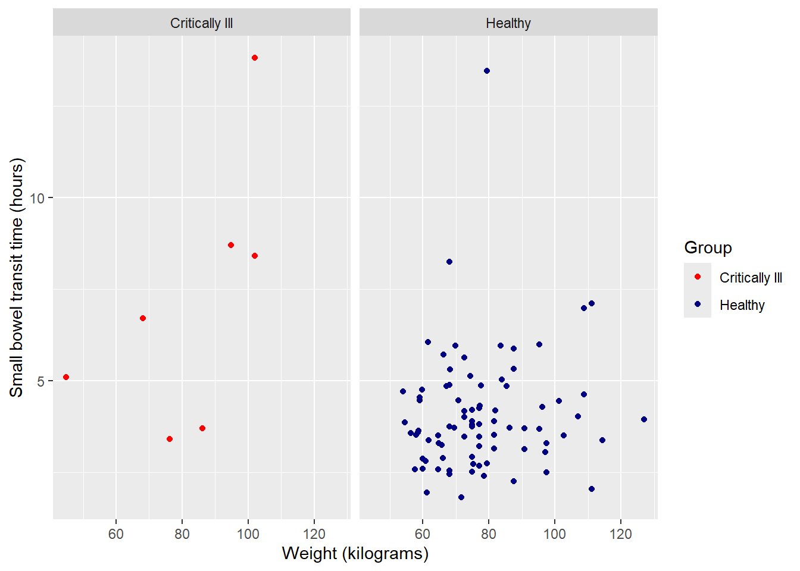
Suppress legend
Having a color legend is no longer necessary. We can suppress the entire legend using an option in the versatile theme() function.
ggplot(data = smartpill, aes(x = Weight, y = SB.Time, color = Group)) +
geom_point() +
labs(x = "Weight (kilograms)", y = "Small bowel transit time (hours)") +
scale_color_manual(values = c("red", "navy"),
breaks = c("0", "1"),
labels = c("Critically Ill", "Healthy"),
name = "Group") +
facet_wrap(~Group,
labeller = as_labeller(c("0" = "Critically Ill", "1" = "Healthy"))) +
theme(legend.position = "none")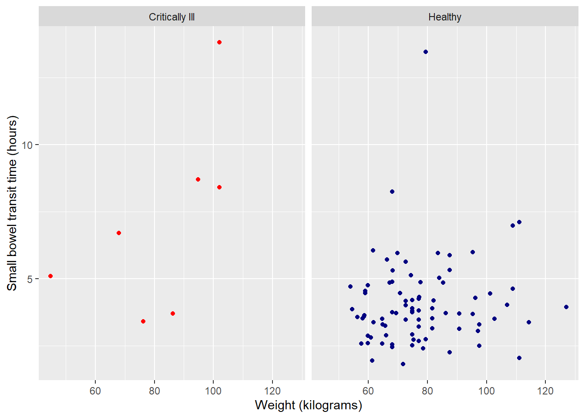
Background colors & other clean up
The theme() option is also useful for changing the remaining default formatting, like background color and axis lines, text size and font, etc. You can individually adjust certain aspects, as we did to remove the legend above, but the faster option is to use the pre-created entire theme options.
Note: As with all customization options for a ggplot2 object, the order of operations is sequential. You will want to incorporate a general theme option first, then have any remaining theme adjustments, like suppressing a legend. Otherwise, the general theme options will override any specific changes you have made in earlier lines of code.
Some popular, publication-ready options include:
theme_bw (basic black and white):
ggplot(data = smartpill, aes(x = Weight, y = SB.Time, color = Group)) +
geom_point() +
labs(x = "Weight (kilograms)", y = "Small bowel transit time (hours)") +
scale_color_manual(values = c("red", "navy"),
breaks = c("0", "1"),
labels = c("Critically Ill", "Healthy"),
name = "Group") +
facet_wrap(~Group,
labeller = as_labeller(c("0" = "Critically Ill", "1" = "Healthy"))) +
theme_bw() +
theme(legend.position = "none")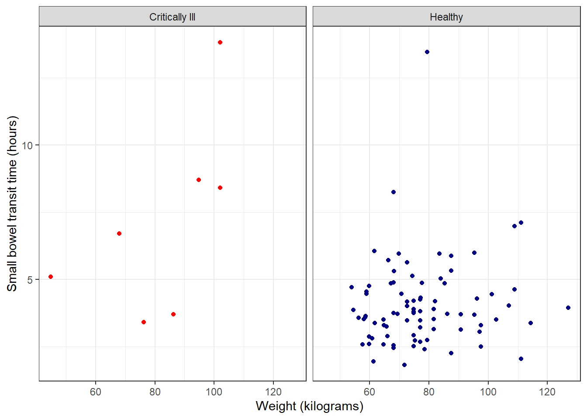
theme_linedraw (similar to black and white, but more stark):
ggplot(data = smartpill, aes(x = Weight, y = SB.Time, color = Group)) +
geom_point() +
labs(x = "Weight (kilograms)", y = "Small bowel transit time (hours)") +
scale_color_manual(values = c("red", "navy"),
breaks = c("0", "1"),
labels = c("Critically Ill", "Healthy"),
name = "Group") +
facet_wrap(~Group,
labeller = as_labeller(c("0" = "Critically Ill", "1" = "Healthy"))) +
theme_linedraw() +
theme(legend.position = "none")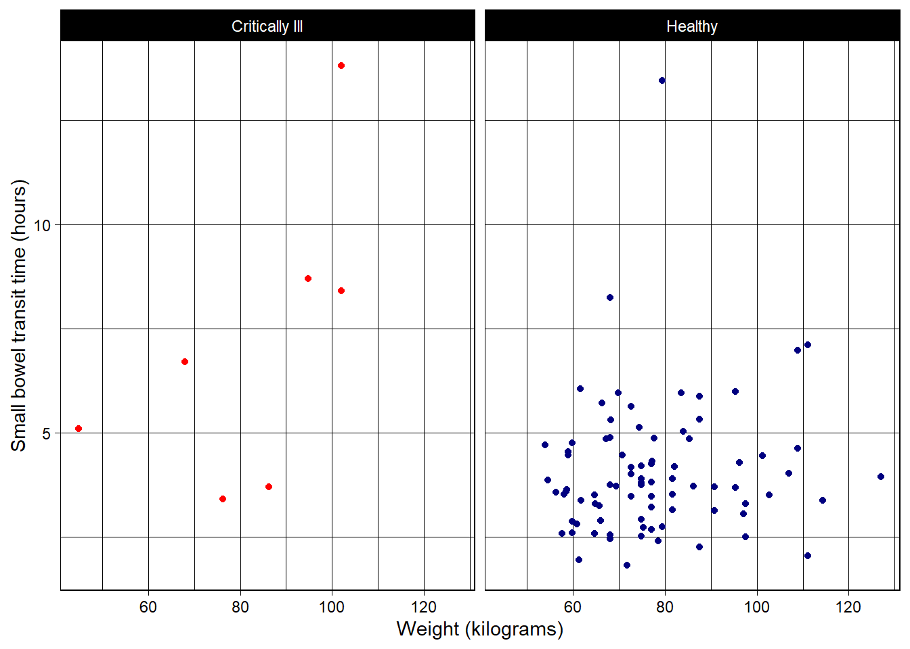
classic (no grid lines):
ggplot(data = smartpill, aes(x = Weight, y = SB.Time, color = Group)) +
geom_point() +
labs(x = "Weight (kilograms)", y = "Small bowel transit time (hours)") +
scale_color_manual(values = c("red", "navy"),
breaks = c("0", "1"),
labels = c("Critically Ill", "Healthy"),
name = "Group") +
facet_wrap(~Group,
labeller = as_labeller(c("0" = "Critically Ill", "1" = "Healthy"))) +
theme_classic() +
theme(legend.position = "none")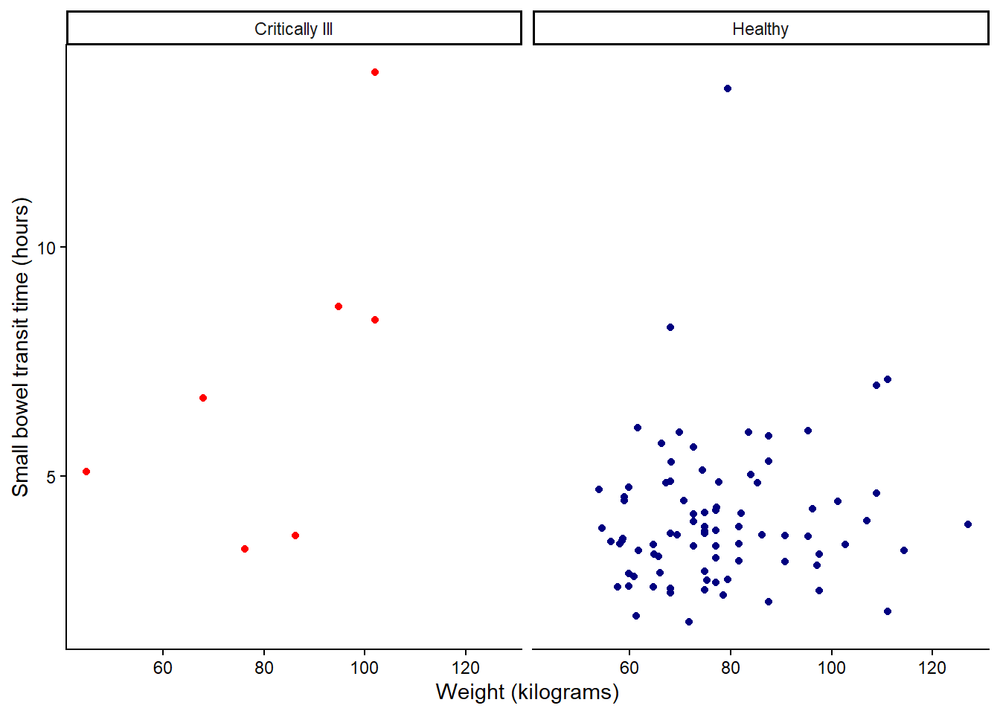
There are also extension packages like ggtheme that offer additional pre-built theme options.
Saving plots
Plots created with ggplot() can be saved using the ggsave() function.
#assign ggplot object to Figure 1
Figure1 <- ggplot(data = smartpill, aes(x = Weight, y = SB.Time, color = Group)) +
geom_point() +
labs(x = "Weight (kilograms)", y = "Small bowel transit time (hours)") +
scale_color_manual(values = c("red", "navy"),
breaks = c("0", "1"),
labels = c("Critically Ill", "Healthy"),
name = "Group") +
facet_wrap(~Group,
labeller = as_labeller(c("0" = "Critically Ill", "1" = "Healthy"))) +
theme_bw() +
theme(legend.position = "none")Arguments and options available:
ggsave(
filename, #File name to create on disk.
plot = get_last_plot(), #Plot to save, defaults to last plot displayed.
device = NULL, #Can either be a device function (e.g. png), or one of "eps", "ps", "tex" (pictex), "pdf", "jpeg", "tiff", "png", "bmp", "svg" or "wmf" (windows only). If NULL (default), the device is guessed based on the filename extension.
path = NULL, #Path of the directory to save plot to: path and filename are combined to create the fully qualified file name. Defaults to the working directory.
scale = 1,
width = NA, #Plot size in units expressed by the units argument. If not supplied, uses the size of the current graphics device.
height = NA, #Plot size in units expressed by the units argument. If not supplied, uses the size of the current graphics device.
units = c("in", "cm", "mm", "px"),
dpi = 300, #Plot resolution. Also accepts a string input: "retina" (320), "print" (300), or "screen" (72).
limitsize = TRUE,
bg = NULL,
create.dir = FALSE,
...
)Saving a png to working directory folder:
ggsave(filename = "Figure1.png", plot = Figure1, height = 4, width = 5, units = "in")Additional resources
- Primary website for ggplot2 including a handy cheatsheet.
- The website R Graph Gallery is an excellent source for worked examples and annotated code for various types of plots and graphs, many of which rely on
ggplot2.